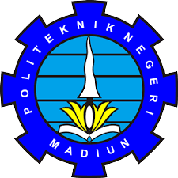

|
 |
KEMENTERIAN PENDIDIKAN, KEBUDAYAAN, RISET, DAN TEKNOLOGI POLITEKNIK NEGERI MADIUN Jalan Serayu Nomor 84 Madiun Kode Pos 63133 Telepon +62 351 452970 Faksimile +62 351 452960 Laman: www.pnm.ac.id, Surel: sekretariat@pnm.ac.id |
| Nama Mahasiswa | : Ahmad Hakim Itsnaini | Jurusan | : Teknik |
| N I M | : 253307054 | Program Studi | : Teknologi Informasi |
Mata Kuliah yang ditempuh :
| No | Kode MK | Mata Kuliah | SKS | Kelas | Dosen Pengampu |
|---|---|---|---|---|---|
| 1. | MKU2201 | Agama Islam | 2 | 2B | Dr. Nanik Nurhayati, S.Ag., M.Pd. |
| 2. | TI22202 | Pemrograman Mobile 1 | 2 | 2B | Sigit Kariagil Bimonugroho, S.Kom., M.T. |
| 3. | TI22203 | Praktik Pemrograman Mobile 1 | 2 | 2B | Sigit Kariagil Bimonugroho, S.Kom., M.T. |
| 4. | TI22204 | Manajemen Resiko Proyek | 2 | 2B | Lutfiyah Dwi Setia, S.Kom., M.Kom. |
| 5. | TI22205 | Pemrograman Berbasis Obyek | 2 | 2B | Ikhwan Baidlowi Sumafta, S.Kom., M.Kom. |
| 6. | TI22206 | Praktik Pemrograman Berbasis Obyek | 2 | 2B | Ikhwan Baidlowi Sumafta, S.Kom., M.Kom. |
| 7. | TI22207 | Desain & Pemrograman Web | 2 | 2B | Ardian Prima Atmaja, S.Kom., M.Cs. |
| 8. | TI22208 | Praktik Desain & Pemrograman Web | 2 | 2B | Ardian Prima Atmaja, S.Kom., M.Cs. |
| 9. | TI22209 | Sistem Operasi | 2 | 2B | Hendrik Kusbandono, S.Kom., M.Kom |
| 10. | TI22210 | Praktik Sistem Operasi | 2 | 2B | Hendrik Kusbandono, S.Kom., M.Kom |
| Jumlah | 20 | ||||
|
Mahasiswa, Ahmad Hakim Itsnaini NIM. 253307054 |
Madiun, 3 Februari 2023 Dosen Pembina Akademik, Gus Nanang Syaifuddiin, S.Kom., M.Kom. NIDN. 0714088904 |